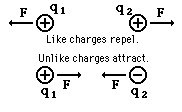

where R12 is the distance between the charges. k is a constant of proportionality known as the Coulomb constant, having the value 9 x 109 N.m2 / C2 in a vacuum.
 Note that the Coulomb constant, k, is
often replaced with (1/4π ε0), where
ε0is the permittivity of the vacuum (more later).
Note that the Coulomb constant, k, is
often replaced with (1/4π ε0), where
ε0is the permittivity of the vacuum (more later).

This is an extremely large force (sufficient to move Mt. Everest with an acceleration of 1cm/s2). The Coulomb is a very large unit. Typical macroscopic charges are measured in micro-coulombs (10-6 C).
 Notice
the
similarity
of
Coulomb's Law to Newton's Law of Gravitation
Notice
the
similarity
of
Coulomb's Law to Newton's Law of Gravitation

Dr. C. L. Davis
Physics Department
University of Louisville
email: c.l.davis@louisville.edu